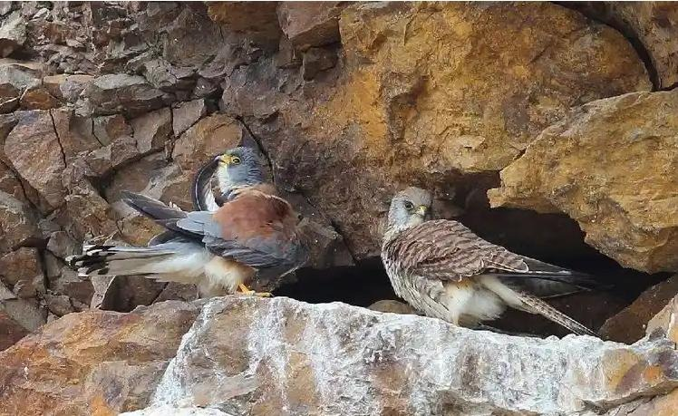
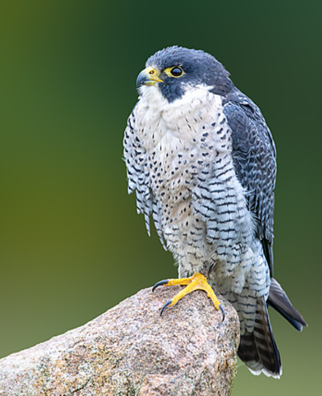
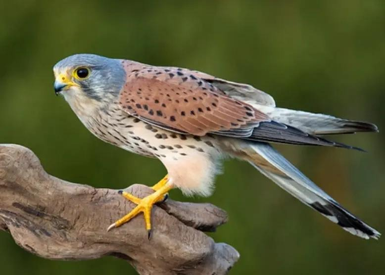
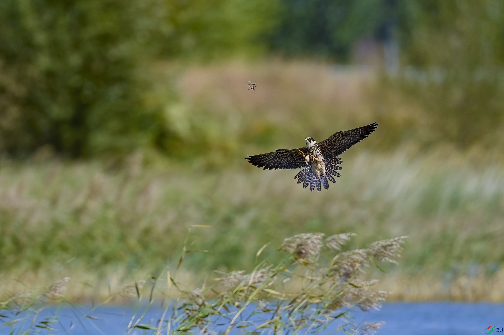
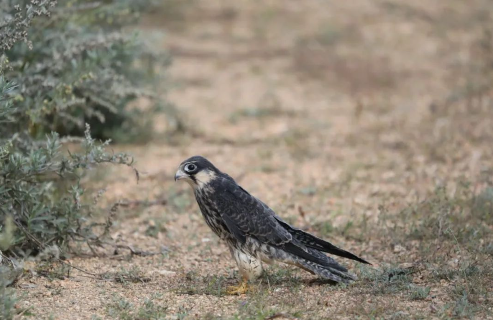

羽翼守望者


隼属（Falco）隶属于隼科，全球约40种，分布于除南极洲外的各大洲。体型中小（20-60cm），翼尖长，飞行速度极快。以鸟类、昆虫为食，也食小型哺乳类。繁殖期营巢于悬崖、树洞或建筑上，每窝产3-6枚卵。
隼类以其超高速的俯冲捕猎而闻名，是空中猎杀的典范。由于栖息地破坏和农药污染，部分种类数量下降。
📖 参考：点此处 查看国际鸟盟资料。

游隼是全球分布最广的隼类，体长约35-50cm，翼展约80-110cm，上体蓝灰色，下体白色带黑横纹。繁殖于各大洲，以鸟类为主食，俯冲时速度可达320km/h。
繁殖期4-6月，营巢于悬崖或高大建筑。曾因农药污染濒临灭绝，恢复后种群回升，但仍受威胁。

红隼体长约30-35cm，上体红褐色，下体白色，具黑斑。常见于开阔地带、山地和城市，以昆虫和小型啮齿类为食。
繁殖期4-7月，营巢于树洞或建筑缝隙。适应力强，是常见的城市猛禽。

燕隼体长约28-34cm，飞行姿态似燕，以昆虫和鸟类为食。繁殖于欧亚大陆，越冬于非洲。
📖 参考：点此处 查看 IUCN 评估。

隼属猛禽是控制害虫和维持生态平衡的重要力量，保护栖息地、减少农药使用是保护关键。
📖 了解更多：点此处 查看中国林草局。